- Artificial Intelligence is a branch of computer science focused on creating systems and machines that can perform tasks typically requiring human intelligence. These tasks include –
- Learning (from data or experience)
- Problem Solving / Making Decisions
- Language understanding (processing human language)
- Perception (recognizing speech, images, or objects)
- Interaction (responding conversationally)
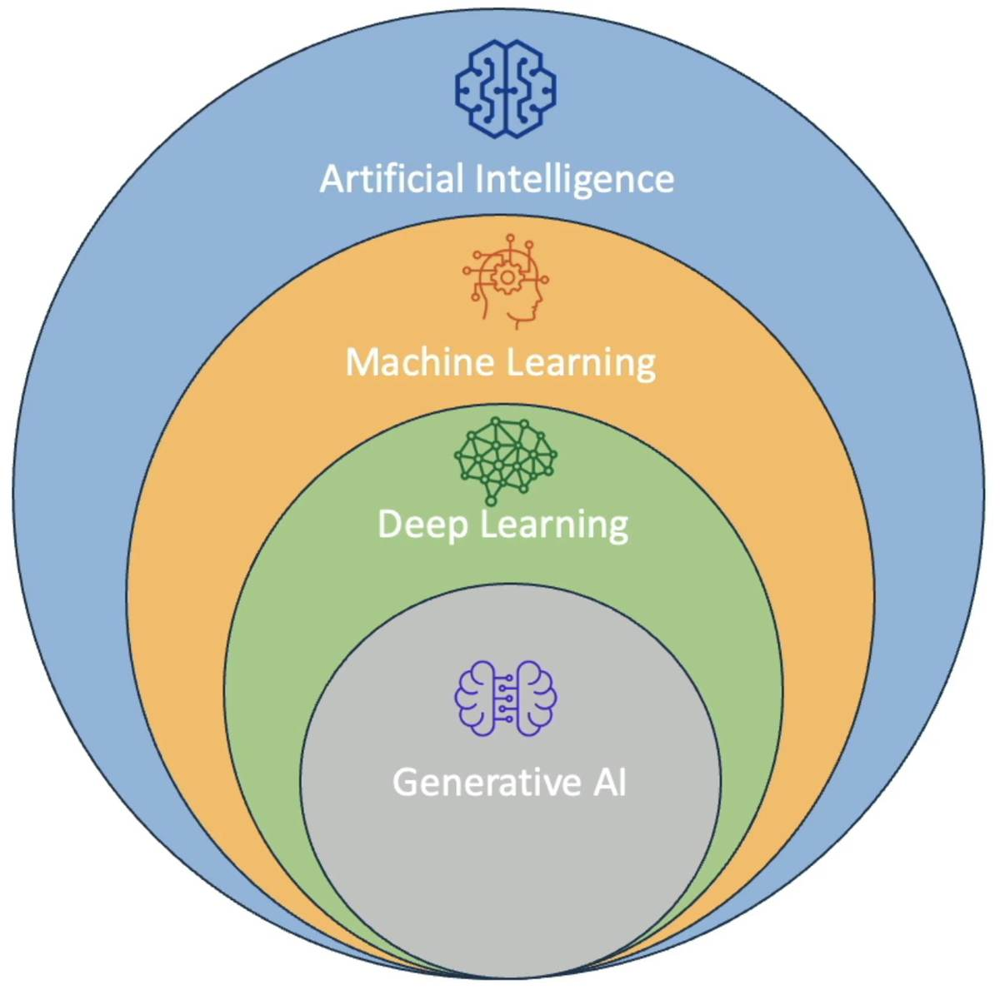
- Machine learning (ML) is a branch of artificial intelligence (AI) and computer science focused on developing algorithms that enable computers to learn from data, identify patterns, and make decisions or predictions with minimal human intervention
AI vs ML. AI -> Broad: Encompasses all efforts to mimic or surpass human intelligence. ML -> Narrow: Focused on learning from data
- Deep Learning is a specialized subset of machine learning that uses multilayered artificial neural networks—often called deep neural networks—to model and solve complex problems by simulating the way the human brain processes information.
- Generative AI is a branch of artificial intelligence focused on creating new content—such as text, images, audio, video, code, and more—by learning patterns from large datasets and then generating original outputs based on user prompts or instructions.
Think of Gen AI as taking Deep Learning and 1) adding multiple neural networks and 2) training with insanely vast amount of data. They are more multi-purpose than Deep Learning models. And in many cases, the multi-purpose GenAI Foundation models and fine-tuned back to satisfy specific usecases.
- Foundation Models are large deep learning neural networks trained on massive, diverse datasets, often unlabeled, that serve as a general-purpose base for many AI applications. Unlike traditional machine learning models designed for specific tasks, foundation models are adaptable and capable of performing a wide variety of tasks such as natural language processing, image generation, question answering, and more, often based on input prompts.
- Large Language Models (LLMs) (a.k.a Transformer Models) are advanced artificial intelligence systems designed to understand, generate, and manipulate human language. They are built using deep learning techniques—specifically, transformer neural network architectures—and are trained on massive datasets containing billions or even trillions of words.
Transformer models are a class of neural network architectures designed to process sequential data—such as text, speech, or even DNA sequences—by learning the context and relationships between elements in the sequence. Unlike earlier models like recurrent neural networks (RNNs), transformers rely entirely on a mechanism called attention (specifically, self-attention) to capture dependencies between all elements in a sequence.
- Top LLMS (2025)
- ChatGPT (OpenAI)
- Gemini (Google
- Llama (Meta)
- Claude (Anthropic)
- Groq (xAI)
- Bert
- Mistral
- Hugging Face
- AWS Bedrock (Nova and Titan)
- Azure AI
Others:
- Diffusion Model (Eg. Stable Diffusion Model):
- generate images
- Multi-Modal Models (eg: GPT-4o)
- process text / images / video
- Some ML Terms to know –
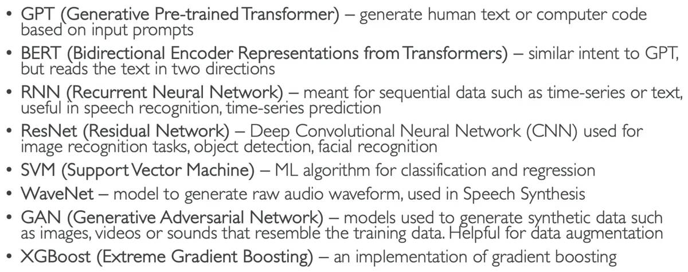
- ML Algorithms:
- Supervised
- Logistic / Linear Regression
- Classification
- Decision Trees
- Un-Supervised
- Clustering
- Association Rule Learning
- Anomaly Detection
- Semi-Supervised
- Fraud Detection
- Sentiment Analysis
- Document Classification
- Self-Supervised
- Reinforcement Learning
Detailed…
- Supervised Learning (needs Labeled Data for training):
- Regression: Used to predict a numeric value based on input data – the output variable is continuous (i.e. meaning the result can take any value in a range)
- Classification: Used to predict the categorical label of the input data – output is discrete (distinct values/categories)
- Binary Classification: eg: spam or not spam
- Multiclass Classification: many categories
- Note: KNN Model (K-Nearest Neighbors) typically used for Classification.
- Un-Supervised Learning (Can work with Un-labeled Data): Unsupervised learning is a type of machine learning where algorithms analyze and draw inferences from data that has no labels or predefined categories.
- Clustering: Clustering is an unsupervised learning technique that organizes and groups similar data points, objects, or observations into clusters based on shared characteristics or patterns—without the need for predefined labels. Technique commonly used -> K-Means Clustering
- Association Rule Learning: Association rule learning is a rule-based machine learning method used to identify interesting relationships, patterns, or associations between variables in large datasets, particularly in transactional databases; Common example -> Market Basket Analysis (find products frequently bought together / if someone buys bread then they will buy butter): Technique -> Apriori Algorithm
- Anomaly Detection: Identify transactions that deviate significant from typical behavior / Fraud detection / Technique: Isolation Forest
- Semi-Supervised Learning: Small amount of labeled data / large amount of unlabeled data / Use the labeled data to label the unlabeled → then train the model / a.k.a pseudo-labeling eg: Document Classification
- Self-Supervised Learning: …
- Reinforcement Learning: is a branch of machine learning focused on training autonomous agents to make a sequence of decisions in dynamic environments to maximize a cumulative reward.
How Reinforcement Learning Works:
- Agent: The learner or decision-maker.
- Environment: The system the agent interacts with.
- Actions: Choices the agent can make.
- State: The current situation of the environment.
- Reward: Feedback signal after taking an action.
Reinforcement Learning usecases:
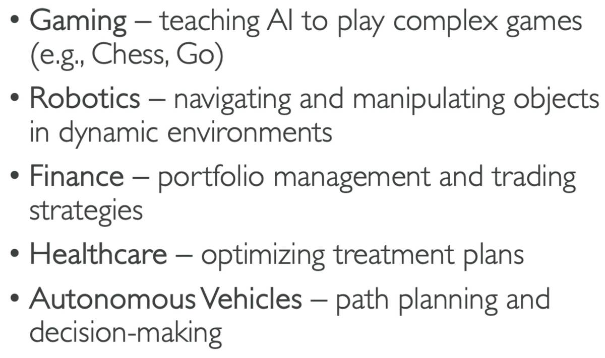
Reinforcement Learning from Human Feedback (RLHF): Used human feedback to help the ML models to self-learn more efficiently / Used a lot in LLM – GenAI applications /
- ML Data Sets
- Training Set: used to train
- Validation Set: used to fine-tune and validate perf | 10-20%
- Test Set: Evaluate Final model performance | 10-20%
- Feature Engineering: use domain knowledge to select and transform raw data into meaningful features: Techniques include –
- Feature Extraction: eg. deriving age from DOB
- Feature Selection: select subset / important predictor features
- Feature Transformation: eg. normalizing numerical data
- Model Evaluation – Model Fit, Bias, and Variance:
Model Fit
- Overfitting: Occurs when a model learns the training data too well, capturing not only the underlying patterns but also the noise and outliers. As a result, the model performs exceptionally well on training data but poorly on unseen or test data because it fails to generalize
- Model is too complex (too many parameters or features)
- High-dimensional data (curse of dimensionality)
- Underfitting: Happens when a model is too simple to capture the underlying patterns in the data. It performs poorly on both training and test data, indicating it has not learned the relationships in the data
- Model is too simple (not enough parameters, insufficient feature engineering)
- Inadequate training time or insufficient data
- Balanced: this is good
Bias: Difference or error between predicted and actual value
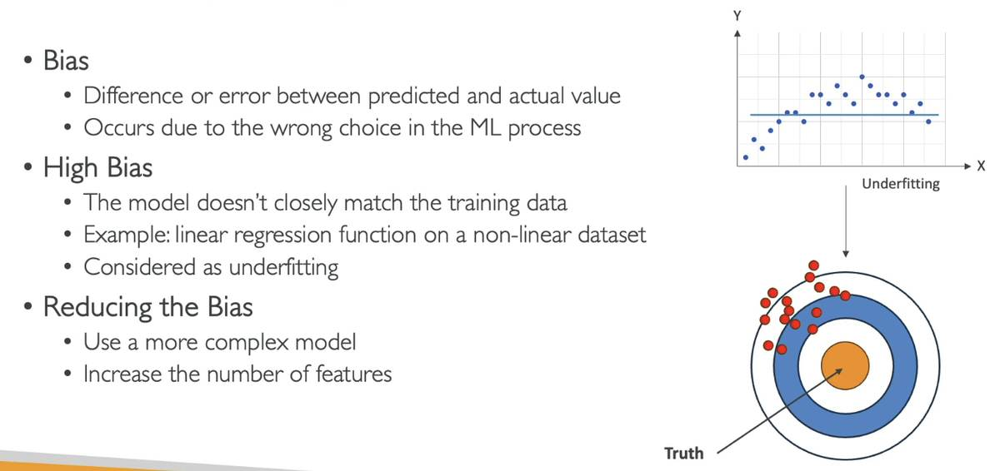
Variance
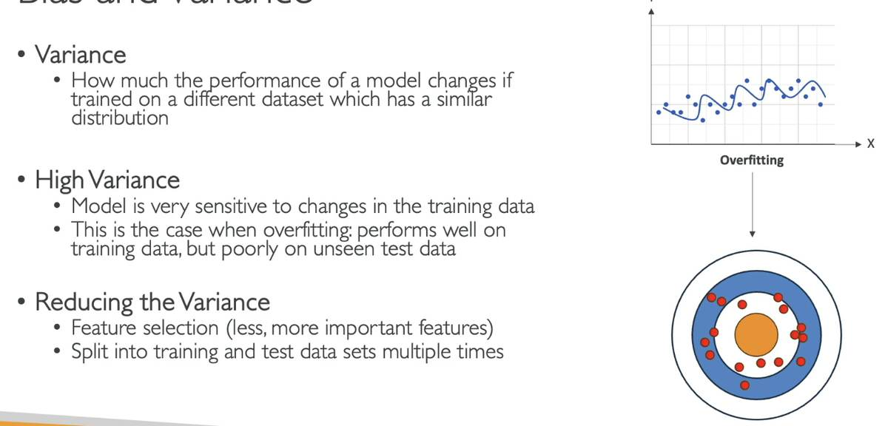
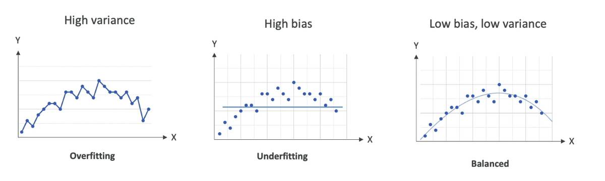
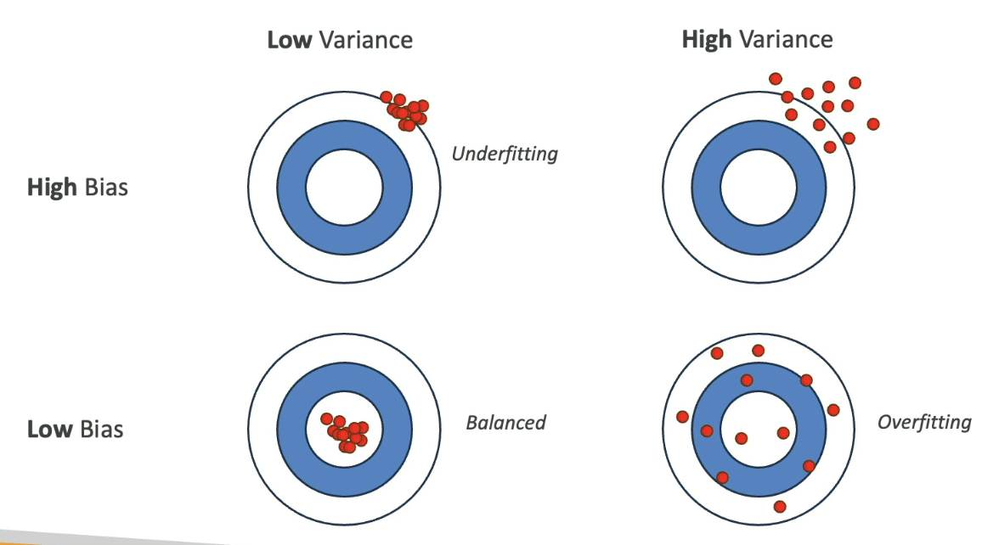
Take Dots above as real world predictions
- Confusion Matrix :
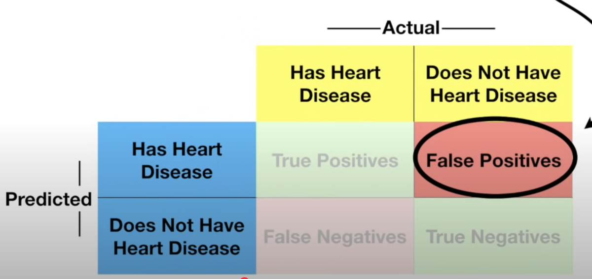
Sensitivity or Recall = True Positives / True Positives + False Negatives
Specificity = True Negatives / True Negatives + False Positives
Precision = True Positives / True Positives + False Positives
F1 Score = 2 * Precision * Recall / Precision + Recall
Accuracy = True Positive + True Negatives / TP + TN + FP + FN
Confusion Matrix can be multi-dimensional too / This helps mainly in evaluating models that do classification.
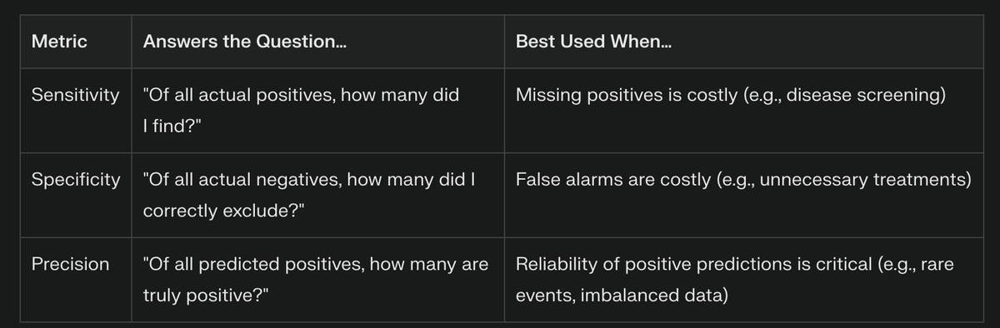
While above all help in classification models, screenshot below helps evaluate Regression Models.
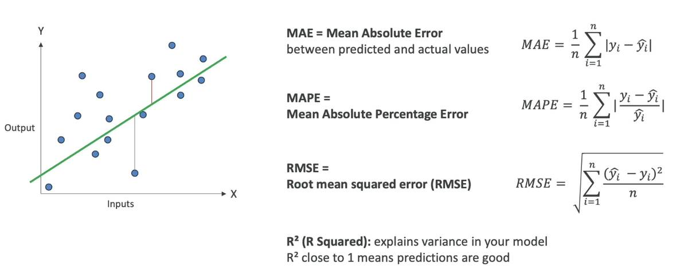
- Hyperparameters: are configuration variables in machine learning that are set before the training process begins and control how a model learns from data
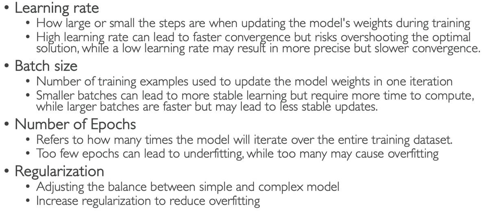